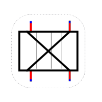
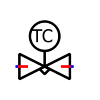
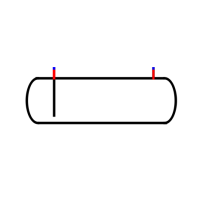

┌──────────────┐
HP vapeur │ CONDENSEUR │ rejette la chaleur
───────────│ │───────────►
└──────┬───────┘
│ HP liquide
┌──────▼───────┐
│ DÉTENDEUR │
└──────┬───────┘
│ BP liquide
┌──────▼───────┐
absorbe │ ÉVAPORATEUR │ produit le froid
◄──────────│ │
└──────┬───────┘
│ BP vapeur
┌──────▼───────┐
│ COMPRESSEUR │
└──────────────┘